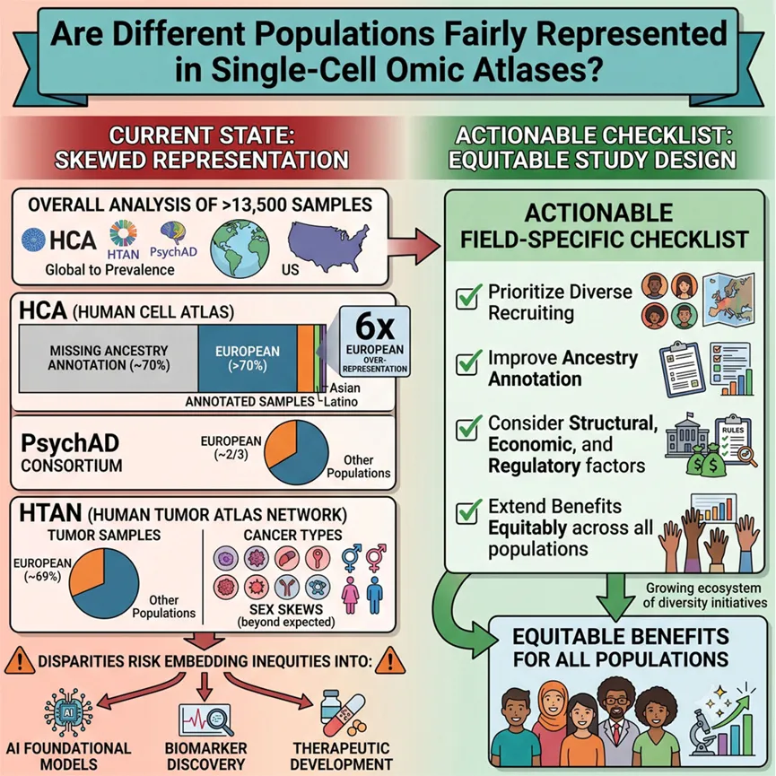
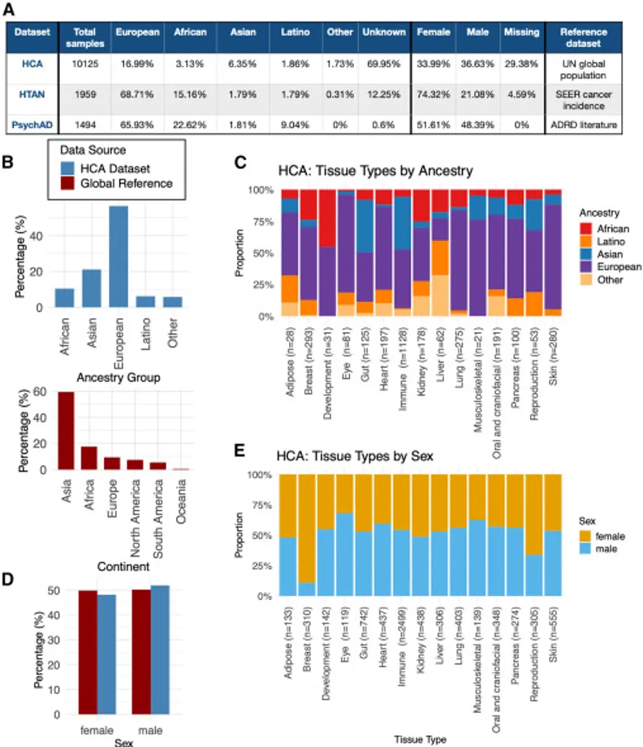
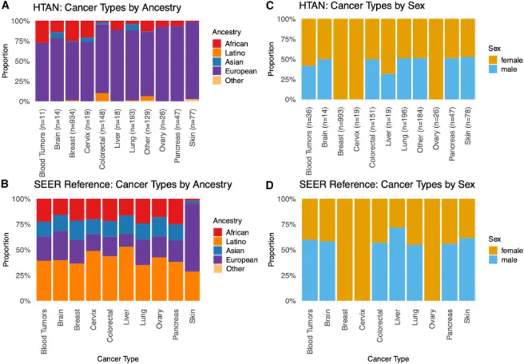
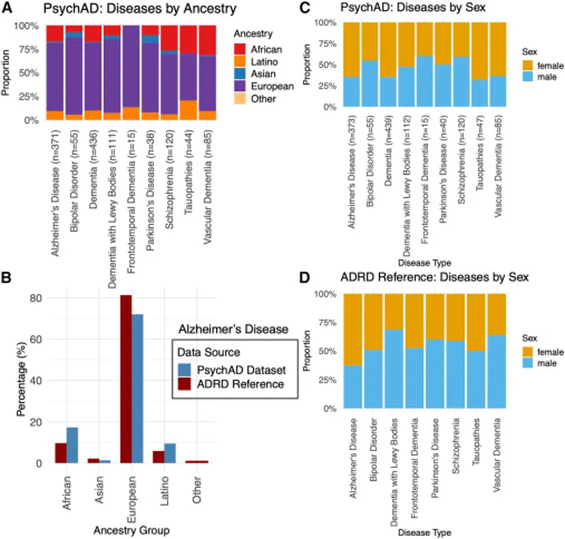
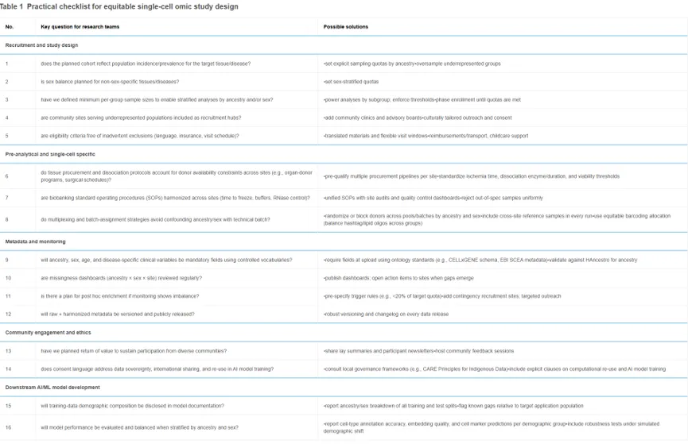

《Cell Genomics》：单细胞图谱的种群偏倚，漏掉了数十亿人
原文：https://mp.weixin.qq.com/s?__biz=MzAwMzIzOTk5OQ==&mid=2247541245&idx=1&sn=a0b38b7f69b9c80aa09d9ba6d7dda459&chksm=9b3c58adac4bd1bbc72e817d26077cf5291aa70428674223683168a0c7904e68d2bdf5c35dc3#rd 合集：文献速递
一、写在前面
单细胞组学技术正在重塑我们对人类生物学和疾病的理解。从人类细胞图谱（HCA）到肿瘤微环境图谱（HTAN），再到神经精神疾病联盟（PsychAD），这些"细胞级 census"为AI基础模型、药物靶点发现和精准医学提供了底层数据基础设施。然而，一个根本性问题长期被忽视：这些被宣称为"人类参考"的图谱，真的代表了全人类吗？
这篇发表于《Cell Genomics》的“Are different populations fairly represented in single-cell omic atlases”（IF=8.4，DOI：10.1016/j.xgen.2026.101300 ）首次对三大单细胞联盟进行了系统性的人口代表性审计。研究揭示了一个与GWAS领域相似的困境——欧洲血统样本的系统性过度代表，以及亚洲、拉丁裔等群体的严重缺位。这不仅是一个技术问题，更是一个关乎健康公平的结构性挑战。

如果需要单细胞数据分析教学、生信热点全文复现、自测数据个性化分析辅导、实验科研服务和常态化实验学习，欢迎联系客服微信[Biomamba_zhushou]。
二、主要内容
**1.**三大联盟的人口构成审计
研究对超过13,500个样本进行了血统和性别构成的量化分析，并与全球人口基准（HCA）、美国SEER癌症发病率（HTAN）及ADRD流行病学数据（PsychAD）进行比对。
1.1 人类细胞图谱（ HCA）：全球参考下的严重失衡

Fig.1
在10,125个样本中，近70%缺乏血统注释（Fig.1A），这本身就是一个严重的元数据缺陷。在有注释的3,043个样本中，欧洲人占56.5%，是全球人口比例（9.4%）的6倍（Fig.1B）。亚洲人（21.1% vs 全球59.4%）、非洲人（10.4% vs 17.6%）和拉丁裔（6.2% vs 13.6%）均显著不足。
作者采用"部分识别边界"（partial-identification bounds）方法处理缺失数据：即使在最保守的假设下（所有缺失样本均为非欧洲血统），欧洲人的比例下限（17.0%）仍高于全球参考值，证明欧洲过度代表具有稳健性。
组织层面偏差显著：皮肤（82.9%欧洲血统）、肺（79.3%）、眼（77.8%）欧洲化程度最高；免疫和肠道组织亚洲比例相对较高（约42%）（Fig.1C）。性别方面，HCA在已注释样本中男性略多（约51.8%），其中免疫（54.3%男性）、眼（68.1%）、肺（56.1%）等组织存在男性富集（Fig. 1D, 1E）。
1.2 人类肿瘤图谱网络（ HTAN）：癌症领域的代表性危机

Fig.2
在1,959个肿瘤样本中，78.3%为欧洲血统，12.3%缺失注释（Fig.2A）。所有癌症类型中欧洲人均超过72%，皮肤癌高达96.1%，胰腺癌93.6%。亚洲和拉丁裔在所有癌种中均严重不足（各约2%）（Fig.2A，2B）。性别分布受乳腺癌主导（50.7%的样本），整体女性占74.3%。在非性别特异性癌症（如肝癌、肺癌）中，女性比例仍高于SEER参考预期，提示潜在的入组偏差。
1.3 PsychAD 联盟：神经精神疾病的血统鸿沟

Fig.3
1,494个样本中，65.9%为欧洲血统，22.6%为非洲血统，亚洲人仅占1.8%（Fig.3A）。阿尔茨海默病（AD）样本中欧洲人占71.6%，亚洲人仅1.4%（Fig.3B）。其他疾病如额颞叶痴呆（86.7%欧洲）、双相障碍（81.8%欧洲）的欧洲化程度更高。
性别总体平衡（51.6%女性），但疾病层面存在偏差：AD和未特定痴呆女性占64.6%-64.9%，与流行病学一致；血管性痴呆女性偏多（63.5%）；而精神分裂症（59.2%男性）、额颞叶痴呆（60%男性）呈男性偏斜，与文献报道相符（Fig. 3C, 3D）。
2. 缺失数据与偏差的交互
研究特别指出，缺失的元数据本身就是偏差的一部分。HCA近70%的血统缺失率，使得真实的人口构成被系统性遮蔽。如果缺失数据在不同群体间呈非随机分布（例如，欧洲样本更可能被注释），那么基于现有数据的分析将进一步放大不平等。
三、讨论与展望
1. 科学后果：从数据偏见到模型偏见
文章尖锐地指出，当前单细胞资源正将人口不平等"编码"进AI基础模型。scGPT、Geneformer等广泛使用的单细胞基础模型，其训练数据大量来源于HCA和HTAN等联盟，却未对欠代表群体进行数据补充。这意味着：
1.细胞类型注释和标记基因的发现可能具有血统特异性偏差，类似于参考基因组遗漏群体特异性变异的问题；
2.药物基因组学应用受限：例如CYP2D6等关键药物代谢基因的等位基因频率在不同人群间差异显著，基于欧洲偏向数据的模型可能无法预测非欧洲群体的治疗反应；
3.生物标志物发现的外部有效性存疑：在单一血统中鉴定的疾病相关细胞状态，未必能推广至全球人群。
国际图谱普遍缺失东亚人群样本的短板，国内已有针对性的弥补方案——2026 年 1 月发表于《Science》的中国人群免疫多组学图谱CIMA ，由华大牵头完成，是全球首个千万级东亚人单细胞免疫图谱，覆盖428例健康中国自然人群、超1000万外周血免疫细胞，系统绘制了适配东亚人群的免疫细胞亚群、基因调控网络与细胞语言AI模型。
对比文中HCA、HTAN亚裔样本不足10%甚至不足2%的现状，CIMA 全部样本为中国本土队列，完整记录年龄、性别、遗传血统元数据，鉴定出73种免疫细胞亚型，其中包括多种在血液中占比不足千分之一的罕见细胞 ；并发现大量免疫调控遗传变异具有显著的人群特异性；数据验证显示，免疫调控关键遗传变异仅 44% 能与欧洲 OneK1K 数据集重合，大量人群特异性靶点、药物响应基因无法通过欧美图谱捕获。
这也印证了原文结论：仅依靠欧美主导的全球单细胞联盟，无法构建适配东亚人群的公平AI生信模型；本土大人群单细胞图谱，是消解数据集血统偏见、实现区域精准医疗的核心底层数据支撑。
** **
2. 结构性根源与解决路径
偏差并非偶然，而是结构性力量的产物：
1.地理与资金集中：大型图谱项目多由欧美机构主导，样本来源默认反映当地人口；
2.技术壁垒：单细胞实验成本高昂，限制了中低收入国家的参与；
3.数据主权与信任：许多国家限制基因组数据出境，部分群体因历史原因对生物样本库存有不信任。
文章肯定了现有改进努力（如HCA公平工作小组、CZI血统网络资助计划、从scRNA-seq推断遗传血统的技术进步），但强调必须在研究设计阶段前置公平性考量，而非事后补救。
**3.**行动框架：16项检查清单

Table 1
研究最具实践价值的贡献是提出了覆盖研究全周期的16项公平性检查清单（Table 1），涵盖五大领域：
1. 招募与设计：按人口发病率设定血统/性别配额；纳入服务欠代表群体的社区诊所；进行亚组统计功效分析；
2. 前分析与实验：统一组织解离和生物样本库SOP；避免血统/性别与实验批次混淆；
3. 元数据与监控：强制使用受控词表（如CELLxGENE标准）记录血统、性别、年龄；建立缺失数据监控看板；
4. 社区参与与伦理：数据共享条款明确AI模型训练用途；遵循CARE原则等原住民数据治理框架；
5. AI/ML模型开发：披露训练数据人口构成；按血统和性别分层评估模型性能。
四、结语
单细胞组学 正处于从 "发现科学" 向 "通用生物参考基础设施" 转型的关键节点。这篇审计文章以量化数据指出，欧美主导的全球单细胞图谱存在根深蒂固的欧洲中心主义偏差，距离覆盖全人类遗传多样性、实现公平精准医学还有巨大鸿沟。如同人类泛基因组计划修正初代参考基因组的人群缺陷，单细胞领域同样需要覆盖各大洲人群的泛细胞参考库。
国内CIMA中国免疫多组学图谱的落地，证明构建本土人群单细胞资源是消解AI生信偏见的可行路线；但目前国内仅免疫方向建成千万级队列，肿瘤、神经、发育类人体组织的大规模东亚单细胞图谱仍存在大量空白。未来，只有同步推进全球跨种族图谱协作、持续扩充本土多样化人群队列、把人口公平性前置到单细胞项目与 AI 模型研发全流程，才能避免单细胞生物学、AI辅助诊疗带来的健康不平等，真正实现面向全人类的精准医疗。
更多单细胞教程：
五、参考
[1] Yang, C., Saravanan, K., Saharan, A. & Huang, K. Are different populations fairly represented in single-cell omic atlases? Cell Genomics6, 101300 (2026).
[2] Yin, J. et al. Chinese Immune Multi-Omics Atlas. Science391, eadt3130 (2026).
Oria

欢迎交流

 留一个领取资料、开箱即用的单细胞分析镜像的助手[Biomamba_zhushou]，方便各位随时交流。同时我们也构建了交流群矩阵，欢迎大家一起讨论。
留一个领取资料、开箱即用的单细胞分析镜像的助手[Biomamba_zhushou]，方便各位随时交流。同时我们也构建了交流群矩阵，欢迎大家一起讨论。
 您点的每个赞和在看，我都认真当成了喜欢
您点的每个赞和在看，我都认真当成了喜欢